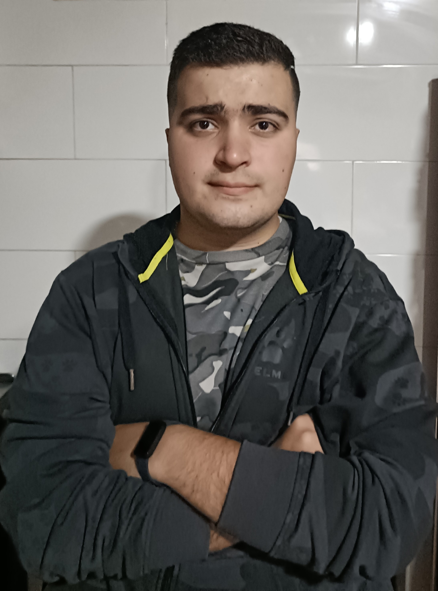
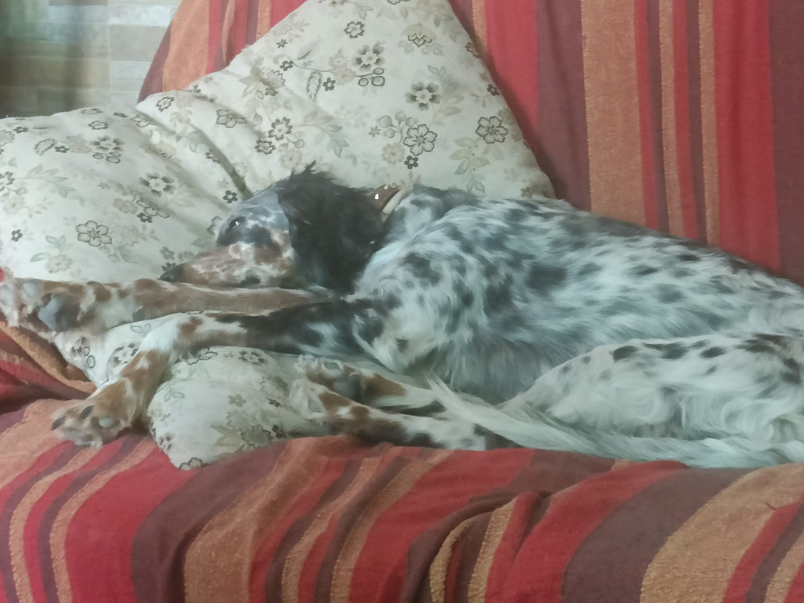

Mi cuenta de GitHub -> (anb061)
·Buenas ,soy Ángel Nieto Burgos (Si Ángel Nieto como el de las motos) y aqui vamos a hablar un poco sobre mi.
·Tengo 21 años estoy en cuarto de carrera mis aficiones consisten principalmente en una amalgama de gustos por la tecnologia (empezando por reparar cualquier aparato que vea, programar ,impresión 3d,manejo de bots...), los videojuegos , el montañismo y mi obsesion mas que aficion leer 😉 .
·Hablando mas en profundidad de mi gusto por la tecnologia siempre me ha gustado modificar mis dispositivos una cosa acabo llevando a la otra y cuando me di cuenta ya estaba metido ya sabia como imprimir piezas necesarias para ello ,como automatizar muchos procesos y me entretenia con ello.
·Como antreriormente mencione soy un obseso de la lectura cuando hay un poco de tiempo libre siempre me podras ver leyendo lo que sea ya sea una novela o hasta un libro de aprendizaje ,la lectura es una de las pocas cosas que me traen paz independientemente del momento.
·Por ultimo una como he visto la foto de la mascota de mi compañero no me he podido resistir a poner una de las mias.
